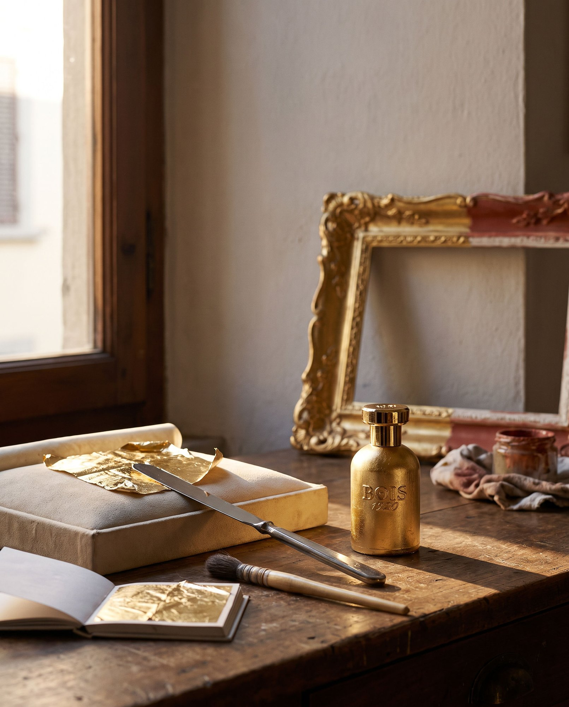
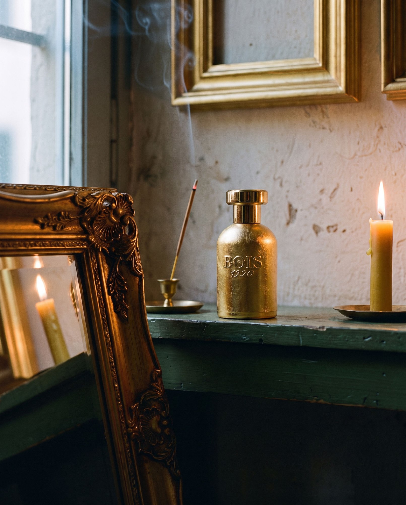
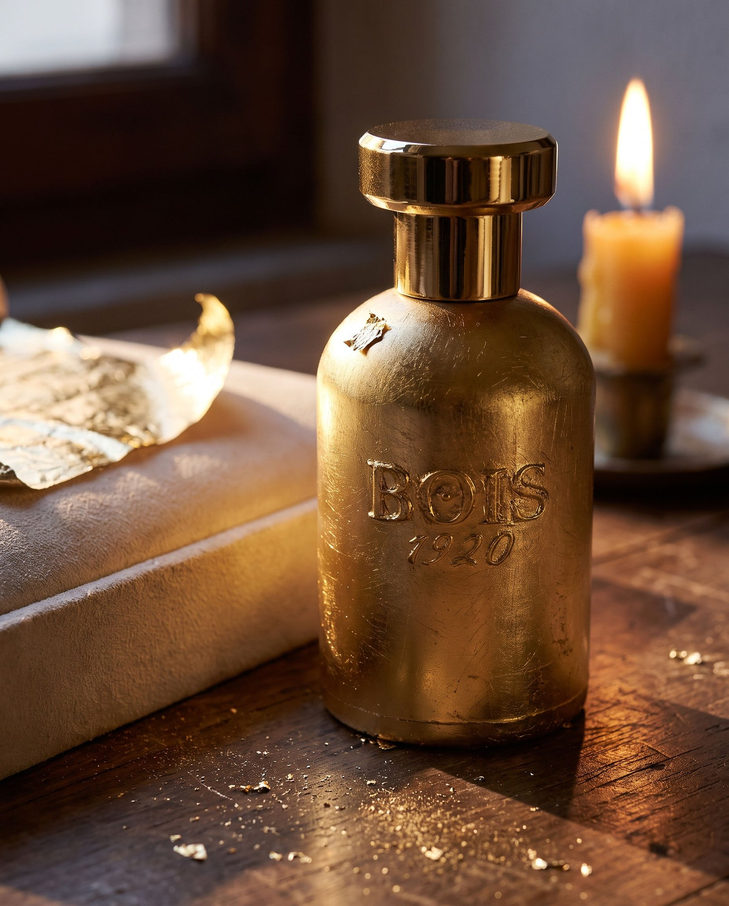

Oro 1920, nella bottega del doratore
Oro 1920 è una bottiglia rivestita d'oro, e l'oro a Firenze ha una casa: le botteghe dell'Oltrarno dove da secoli si dorano le cornici, le stesse cornici stampate sul vostro astuccio. Ho messo il flacone lì, nella luce delle cinque del pomeriggio, fra cuscino da doratore, foglia d'oro, cera d'api e incenso.
Bottiglia, tappo, incisione e proporzioni sono quelli del vostro packshot, intatti. Cambia solo quello che gli sta intorno.



Serie completa su Oro 1920: otto-dieci immagini in questo mondo, formati per e-commerce, social e stampa, e un film verticale di quindici secondi, con sound design, dalla stessa produzione. Prima consegna in cinque-sette giorni dal via.
Immagini prodotte con direzione fotografica e strumenti generativi a partire dal vostro packshot ufficiale: il prodotto non è stato modificato. Serie in revisione, versione del 17 settembre.
Matteo Palumbo · 393 332 5473 · matteopalumboph@gmail.com · Portfolio